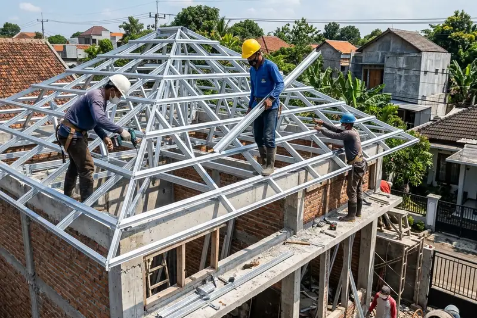

Daftar Isi
- Apa Itu Struktur Baja Ringan?
- Apa Kelebihan Membangun Rumah dengan Baja Ringan?
- Apa Kekurangan Baja Ringan yang Perlu Diketahui?
- Bagaimana Proses Membangun Rumah dengan Struktur Baja Ringan?
- Berapa Biaya Bangun Rumah dengan Baja Ringan?
- Apa Kesalahan Umum Saat Memasang Struktur Baja Ringan?
- Tips Memilih Kontraktor dan Material Baja Ringan
- FAQ
Bangun rumah dengan struktur baja ringan adalah metode konstruksi yang menggunakan rangka baja galvanis atau galvalum sebagai pengganti kayu atau beton pada bagian atap dan dinding tertentu. Metode ini populer karena bobotnya ringan, tahan rayap, dan proses pemasangannya relatif cepat dibanding konstruksi konvensional.
- Baja ringan umumnya digunakan untuk rangka atap, dan pada beberapa desain juga untuk struktur dinding partisi.
- Bobotnya jauh lebih ringan dibanding kayu maupun beton bertulang, sehingga membebani pondasi lebih kecil.
- Tahan terhadap rayap dan tidak mudah lapuk seperti kayu.
- Waktu pemasangan cenderung lebih singkat karena komponennya diproduksi dengan ukuran presisi di pabrik.
- Biaya dan hasil akhir sangat bergantung pada kualitas material, desain, dan kontraktor yang mengerjakan.
Apa Itu Struktur Baja Ringan?
Struktur baja ringan adalah rangka bangunan yang dibuat dari lembaran baja tipis berlapis zinc (galvanis) atau campuran zinc-alumunium (galvalum), dibentuk menjadi profil C atau U dengan ketebalan tertentu agar tetap kuat meski ringan.
Material ini pertama kali populer digunakan untuk rangka atap sebagai pengganti kayu atau baja konvensional yang lebih berat. Berbeda dengan baja struktural biasa yang tebal dan berat, baja ringan diproduksi dengan proses cold-formed sehingga tetap kokoh pada bobot yang jauh lebih kecil.
Pada perkembangannya, baja ringan juga digunakan untuk rangka dinding partisi, kanopi, mezzanine, hingga struktur rumah tumbuh bertingkat, meski penggunaannya pada struktur dinding utama rumah bertingkat perlu perhitungan teknis yang lebih cermat dibanding sekadar rangka atap.
Apa Kelebihan Membangun Rumah dengan Baja Ringan?
Kelebihan utama baja ringan adalah kombinasi bobot ringan, ketahanan terhadap organisme perusak, dan kecepatan pemasangan yang sulit ditandingi material konvensional.
Beberapa kelebihan yang umum disebut dalam praktik konstruksi:
- Bobot ringan — mengurangi beban pada struktur pondasi dan kolom di bawahnya.
- Tahan rayap dan jamur — karena berbahan logam, baja ringan tidak diserang organisme perusak kayu.
- Presisi ukuran — komponen dipotong dan dilubangi dengan mesin sehingga ukurannya konsisten dan mengurangi kesalahan pemasangan di lapangan.
- Proses pemasangan lebih cepat — dibanding rangka kayu yang harus dipotong dan disesuaikan manual di lokasi.
- Tahan api lebih baik dibanding kayu, meski tetap memerlukan perlakuan khusus pada suhu ekstrem karena baja dapat melemah pada panas sangat tinggi.
Apa Kekurangan Baja Ringan yang Perlu Diketahui?
Kekurangan baja ringan umumnya terkait risiko korosi jika kualitas lapisan galvanis rendah, serta ketergantungan besar pada keahlian tukang saat pemasangan.
Beberapa hal yang perlu dipertimbangkan:
- Rentan korosi bila lapisan pelindung (zinc/galvalum) tergores atau kualitas material rendah, terutama di area lembap atau pesisir.
- Membutuhkan tukang yang benar-benar terlatih, karena kesalahan sambungan atau baut dapat mengurangi kekuatan struktur secara signifikan.
- Konduktor panas dan suara yang cukup baik, sehingga rumah dengan rangka atap baja ringan tanpa insulasi tambahan bisa terasa lebih panas di siang hari.
- Variasi kualitas material di pasaran cukup luas, sehingga pemilihan brand dan ketebalan (biasa disebut TCT) perlu diperhatikan dengan teliti.
Bagaimana Proses Membangun Rumah dengan Struktur Baja Ringan?
Proses pembangunan rumah dengan struktur baja ringan umumnya dimulai dari perhitungan desain, dilanjutkan pemasangan rangka setelah struktur dinding dan kolom utama berdiri.
Secara umum tahapannya meliputi:
- Perencanaan desain dan perhitungan struktur oleh arsitek atau insinyur sipil.
- Pembangunan pondasi, kolom, dan dinding utama menggunakan material konvensional (beton, bata, atau bata ringan).
- Pemasangan rangka baja ringan pada bagian atap, disesuaikan dengan bentuk dan kemiringan yang diren কমপক্ষেkan.
- Pemasangan penutup atap di atas rangka baja ringan.
- Finishing, termasuk insulasi panas bila diperlukan.
Pada rumah yang menggunakan baja ringan juga untuk rangka dinding, tahapannya sedikit berbeda karena rangka dinding dipasang lebih dahulu sebelum penutup dinding ditambahkan.
Berapa Biaya Bangun Rumah dengan Baja Ringan?
Biaya bangun rumah dengan struktur baja ringan sangat bervariasi, dipengaruhi oleh luas bangunan, ketebalan material, desain atap, serta upah tukang di wilayah masing-masing.
Beberapa faktor yang mempengaruhi biaya secara umum:
- Ketebalan dan kualitas baja ringan — material dengan lapisan anti-korosi lebih tebal umumnya lebih mahal namun lebih tahan lama.
- Kompleksitas desain atap — atap dengan banyak sudut atau bentuk khusus membutuhkan lebih banyak sambungan dan waktu kerja.
- Lokasi proyek — harga material dan upah tukang berbeda antar wilayah.
- Jasa kontraktor — memilih kontraktor berpengalaman biasanya menambah biaya jasa namun dapat mengurangi risiko kesalahan pemasangan.
Karena variasi ini cukup besar, disarankan untuk meminta penawaran (RAB) langsung dari beberapa kontraktor guna mendapat gambaran biaya yang sesuai kondisi proyek nyata.
Apa Kesalahan Umum Saat Memasang Struktur Baja Ringan?
Kesalahan paling umum adalah penggunaan material dengan ketebalan di bawah standar dan pemasangan baut yang tidak sesuai spesifikasi teknis.
Kesalahan lain yang sering terjadi:
- Menggunakan jarak antar kuda-kuda yang tidak sesuai perhitungan beban atap.
- Tidak memperhitungkan beban angin dan kemiringan atap sesuai wilayah.
- Mengabaikan lapisan insulasi sehingga ruangan di bawah atap terasa panas.
- Memilih kontraktor tanpa pengalaman khusus di bidang baja ringan.
Tips Memilih Kontraktor dan Material Baja Ringan
Pilih kontraktor yang dapat menunjukkan portofolio proyek sejenis dan bersedia menjelaskan spesifikasi material yang digunakan secara transparan.
Beberapa tips praktis:
- Minta spesifikasi ketebalan material (TCT) secara tertulis dalam RAB.
- Bandingkan penawaran dari lebih dari satu kontraktor.
- Tanyakan garansi struktur, khususnya terhadap korosi.
- Periksa reputasi brand baja ringan yang ditawarkan, bukan hanya harga termurah.